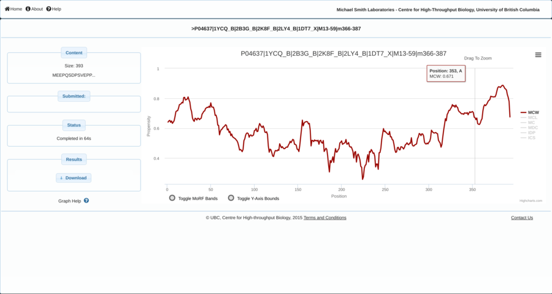

The Rare Diseases: Models & Mechanisms Network has been established to
catalyze connections between people discovering new genes in patients with rare diseases, and basic
scientists who can analyze equivalent genes and pathways in model organisms. Catalyst Grants fund
projects that will allow rapid confirmation of potentially disease-causing genes, and fuel pilot
studies to improve understanding of how specific gene mutations cause disease. It is intended that
collaborations across the Canadian biomedical community will expedite the understanding of disorders,
enabling the design of new therapies to the ultimate benefit of those affected by rare diseases.
A web-based system and database that provides access to historical records and trends in the Gene
Ontology and GO annotations (GOA). GOTrack gives users access to gene- and term-level information on
annotations for nine model organisms (including human) as well as an interactive tool that measures
the stability of enrichment results over time for user-provided “hit lists” of genes. Capable of
performing and visualizing real-time statistical analyses on large datasets.
Gemma is a set of tools for genomics data meta-analysis, currently primarily targeted at the analysis
of gene expression profiles. Gemma contains data from thousands of public studies, referencing
thousands of published papers. Users can search, access and visualize coexpression and differential
expression results.

ASPIREdb is a web-based software system for the analysis and visualization of genomic variants (CNVs, SNVs, and Indels)
and phenotypes. Potential users include researchers who are trying to understand the relationships
between discovered variants and phenotypes.

Web application and database providing a harmonized and comprehensive collection of of human DNA
genetic variants found in individuals diagnosed with Autism Spectrum Disorder (ASD) and reported in
peer-reviewed scientific literature.

Web-based queuing system used by a computational cluster for finding fast and accurate predictions of
molecular recognition features (MoRFs) in an amino acid query sequence.
IDRBind is a protein interface predictor for binding sites of intrinsically disordered protein regions
(IDRs), ranging from short linear motifs (SLiMs) to molecular recognition features (MoRFs).

LIST predicts the deleteriousness of amino acid mutations in human proteomes. The current release, 0.9
includes precomputed predictions of ~20,000 SwissProt protein sequences identified by their UniProt
accession number. Prediction scores in the range [0 .. 1], where lower scores indicate more benign
and higher indicate deleteriousness effect.
LIST 2.0 predicts the deleteriousness of amino acid mutations in human protein sequences. First, it
aligns (pair-wise alignment) the query sequence to all protein sequences in the UniProt Swiss-Prot/TrEMBL
database and then it identifies the most relevant homologies based on their local identity to the query
sequence around the position of the target mutation. And finally, it estimates the potential deleteriousness
of mutations based on Taxonomy distance of species with variations to the query.